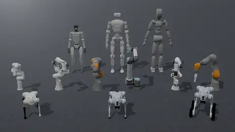

Robots¶
Eden ships robot presets: options classes that load a robot asset with its joint order, default pose, PD gains, armature and effort limits already set. This page covers using and overriding a preset, the full catalog, composite rigs (an arm with a gripper or hand, a humanoid with a hand per wrist), the actuator specs gains are derived from, and how to add a robot or a new asset family. The physics behind the fields (DOF ordering, the armature default, gains vs passive springs) is on Entities.

Using a robot¶
Every preset is importable as en.robots.<Class> (the lazy namespace for eden.options.robots) and is placed
in a scene like any other entity:
import eden as en
scene_options = en.scenes.Empty(robot=en.robots.Go2()) # a Go2 on a ground plane, named "robot"
A preset is a Pydantic options class, so override any field at construction. The class's values are the defaults; what you pass replaces them:
A DOF dict you pass replaces the class's dict
default_dofs_kp, default_dofs_kd and every other default_dofs_* dict you pass replace the preset's
dict rather than merging into it. A DOF your dict does not cover falls back to the simulator's value, which
for a URDF's kp / kd is 0. Re-state every entry you are not deliberately changing; see
Actuator gains.
Presets are also registered by name in ROBOT_REGISTRY, keyed by the snake-cased class name:
from eden.options.robots import ROBOT_REGISTRY
cls = ROBOT_REGISTRY.get("go2") # -> Go2
robot = cls(default_root_pos=(0.0, 0.0, 0.4))
To look at a robot without writing a task, open it in the viewer or render a snapshot. Both take a class name or
an index key such as robot/go2:
eden view Go2 # interactive viewer; -c shows collision geometry
eden snap G1Dofs29 -o g1.png # one image
eden arrange FrankaEmikaPanda YCB003CrackerBox # pose entities with sliders, export a SceneOptions snippet
What a preset declares¶
A preset subclasses RobotOptions, an EntityOptions with is_articulated=True
and is_actuated=True. It sets ordinary fields (validated, serialized with the config, overridable) and
class-level facts about the asset (ClassVars, read by terms, rigs and deployment but not stored in configs).
| Field | Kind | Meaning |
|---|---|---|
file |
field | The asset's repo path (see Where file comes from). |
is_fixed_base |
field | Arms and grippers are fixed, mobile robots and hands are free. For an MJCF it must match the file (rule). |
dofs_name |
field | The controlled joints, in the order every DOF-indexed tensor uses (DOF ordering). |
default_root_pos, default_root_quat |
field | The root link's spawn pose, authored frame, wxyz. |
default_dofs_pos |
field | Joint positions at reset, and the zero point of position actions. |
default_dofs_kp, default_dofs_kd |
field | PD gains of Genesis' position / velocity controller. |
default_dofs_armature, _damping, _stiffness, _frictionloss, _force_limits |
field | Joint dynamics; anything unset comes from the asset or the actuator spec. |
links_to_keep |
field | URDF links Genesis must not merge away (feet, sensor frames). |
dofs_spec |
class | Actuator spec per DOF pattern (Actuators). |
actuated_dofs_name |
class | The DOFs a policy drives; defaults to all of dofs_name. A hand with coupled joints lists only its drivers. |
ee_links_name |
class | End-effector links; ee_links_name[0] is the IK frame. |
feet_links_name |
class | Links the robot stands on. The deploy-time base-velocity estimator uses them; empty means "no feet" and makes it refuse (as Go2W does, whose feet are wheels). |
gantry_links_name |
class | Where eden deploy --mujoco --gantry hangs the robot. |
open_dofs_pos, close_dofs_pos |
class | Gripper presets only: the open and closed targets of the binary gripper action. |
tcp_offset, stroke |
class | Gripper facts: the pad midpoint in the gripper's base frame, and the pad-to-pad opening (m). |
max_substep_dt |
class | The coarsest sim_dt / sim_substeps the asset's constraints stay stiff at (Robotiq2f85: 0.001). |
metadata |
class | A MetadataOptions bag: hands declare target_hand_links (fingertips) and, for coupled fingers, mimic_dofs (follower -> (driver, multiplier, offset)). |
Several robot modules also export per-joint action scales computed from the same actuator specs, for a joint
action term's scale (for example ImplicitPDController.configure(scale=GO2_ACTION_SCALE, ...)):
G1_ACTION_SCALE, GO1_ACTION_SCALE, GO2_ACTION_SCALE, GO2W_ACTION_SCALE, OLI_ACTION_SCALE,
YAM_ACTION_SCALE.
Robot catalog¶
The catalog below is ROBOT_REGISTRY (47 unit robots). "DOFs" is the length of the preset's dofs_name;
"Base" is its is_fixed_base default. Left / right hand pairs share a row.
Arms and mobile manipulators¶
| Class | Registry key | DOFs | Base | Asset |
|---|---|---|---|---|
FrankaEmikaPanda |
franka_emika_panda |
9 (7 arm + 2 fingers) | fixed | manipulators/franka_panda/panda.xml |
FrankaEmikaPandaNoHand |
franka_emika_panda_no_hand |
7 | fixed | manipulators/franka_panda/panda_nohand.xml |
FrankaResearch3 |
franka_research3 |
7 | fixed | arms/franka_fr3/fr3.xml |
Iiwa14 |
iiwa14 |
7 | fixed | arms/kuka_iiwa14/iiwa14.xml |
UR5e |
ur5e |
6 | fixed | arms/universal_ur5e/ur5e.urdf |
UR10e |
ur10e |
6 | fixed | arms/universal_ur10e/ur10e.urdf |
Xarm7 |
xarm7 |
7 | fixed | arms/ufactory_xarm7/xarm.urdf |
Yam |
yam |
8 | fixed | manipulators/i2rt_yam/yam.xml |
WidowX250 |
widowx250 |
8 (with its own fingers) | fixed | manipulators/trossen_wx250s/wx250s.xml |
Aloha |
aloha |
16 (bimanual) | fixed | manipulators/aloha_vx300s/aloha.urdf |
OmniResetUR5e2f85 |
omni_reset_ur5e2f85 |
7 | fixed | arms/omnireset_ur5e_2f85/omnireset_ur5e_2f85.xml |
OmniResetUR5e2f85 is one asset, a UR5e with a Robotiq 2F-85 exactly as the OmniReset policies were trained on
it; for a UR arm and gripper you can recombine, use the UR5eRobotiq rig below.
Grippers¶
| Class | Registry key | DOFs | Base | Asset |
|---|---|---|---|---|
FrankaHand |
franka_hand |
2 | fixed | grippers/franka_hand/franka_hand.xml |
Robotiq2f85 |
robotiq2f85 |
6 (2 driven) | fixed | grippers/robotiq_2f85/2f85.xml |
Grippers default to a fixed base so they can be used standalone; set is_fixed_base=False to weld one onto an
arm (the composite rigs do). Robotiq2f85 carries the closed-loop tuning described in
Closed-loop grippers.
Humanoids¶
| Class | Registry key | DOFs | Base | Asset |
|---|---|---|---|---|
G1Dofs23 |
g1_dofs23 |
23 | free | humanoids/unitree_g1/g1_23dof.xml |
G1Dofs29 |
g1_dofs29 |
29 | free | humanoids/unitree_g1/g1_29dof_rev_1_0.xml |
G1Dofs29NoWristDof |
g1_dofs29_no_wrist_dof |
23 (the 29-DOF G1 with wrists welded) | free | humanoids/unitree_g1/g1_29dof_wrist_disabled.xml |
G1Dofs29NoHands |
g1_dofs29_no_hands |
29 | free | humanoids/unitree_g1/g1_29dof_rev_1_0_no_hand.xml |
G1Dofs29Dex3 |
g1_dofs29_dex3 |
43 (29 + two 7-DOF Dex3 hands) | free | humanoids/unitree_g1/g1_29dof_with_hand_sonic.xml |
Oli |
oli |
31 | free | humanoids/limx_oli/HU_D04_01.urdf |
OliNoHands |
oli_no_hands |
31 | free | humanoids/limx_oli/HU_D04_01_no_hand.urdf |
SmplHumanoid |
smpl_humanoid |
69 | free | humanoids/smpl_humanoid/smpl_humanoid.xml |
PhcSmplHumanoid |
phc_smpl_humanoid |
69 | free | humanoids/smpl_humanoid/smpl_humanoid_phc.xml |
The NoHands variants exist to carry a real end-effector: they expose wrist flanges, so the arms carry the
welded hand's mass and not a moulded one as well.
Quadrupeds¶
| Class | Registry key | DOFs | Base | Asset |
|---|---|---|---|---|
Go1 |
go1 |
12 | free | quadrupeds/unitree_go1/go1.urdf |
Go2 |
go2 |
12 | free | quadrupeds/unitree_go2/go2.urdf |
Go2W |
go2_w |
16 (12 legs + 4 wheels) | free | quadrupeds/unitree_go2w/go2w.urdf |
Dexterous hands¶
All hands default to a free base. Each class name ends in _L or _R; the registry keys end in _l / _r.
| Classes | Registry keys | DOFs | Asset directory |
|---|---|---|---|
XHand1_L, XHand1_R |
xhand1_l, xhand1_r |
12 | hands/robotera_xhand/ |
InspireRH56_L, InspireRH56_R |
inspire_rh56_l, inspire_rh56_r |
12 | hands/inspire_hand/ |
InspireRH56DFQ_L, InspireRH56DFQ_R |
inspire_rh56_dfq_l, inspire_rh56_dfq_r |
12 (6 driven) | hands/inspire_hand/ |
LeapHand_L, LeapHand_R |
leap_hand_l, leap_hand_r |
16 | hands/leap_hand/ |
SharpaWave_L, SharpaWave_R |
sharpa_wave_l, sharpa_wave_r |
22 | hands/sharpa_hand/ |
TesolloDG5F_L, TesolloDG5F_R |
tesollo_dg5f_l, tesollo_dg5f_r |
20 | hands/tesollo_hand/ |
ManoHand_L, ManoHand_R |
mano_hand_l, mano_hand_r |
20 | hands/mano_hand/ |
WujiHand1_L, WujiHand1_R |
wuji_hand1_l, wuji_hand1_r |
20 | hands/wuji_hand1/ |
WujiHand1Simplified_L, WujiHand1Simplified_R |
wuji_hand1_simplified_l, wuji_hand1_simplified_r |
20 (primitive collision) | hands/wuji_hand1/ |
WujiHand2Beta2_L, WujiHand2Beta2_R |
wuji_hand2beta2_l, wuji_hand2beta2_r |
20 | hands/wuji_hand2beta2/ |
WujiHand2Beta2WithMount_L, WujiHand2Beta2WithMount_R |
wuji_hand2beta2_with_mount_l, wuji_hand2beta2_with_mount_r |
20 (root link is the mount plate) | hands/wuji_hand2beta2/ |
The Inspire RH56 hands are marked unstable
eden/options/robots/inspire_rh56.py flags its base class as a placeholder whose setup is unstable: the
Inspire hand is non-backdrivable with high joint friction, which the physics does not model yet. The
InspireRH56DFQ hands couple six follower joints to six drivers through metadata.mimic_dofs, which an
action term's mimic_dofs takes (see Actions).
A few robots are defined outside the catalog because only one task or policy uses them: the LIBERO Panda and its
mounted rig (LiberoPanda, LiberoMountedPanda in eden/options/robots/libero.py) and the HUSKY G1
(eden/extensions/policies/husky/policy.py).
Composite robots¶
A composite robot bundles several unit robots into one rig. It is itself a validated options object
(CompositeEntityOptions), so it round-trips through the config system and is placed in a scene under one name;
when the environment is constructed it expands into its unit robots plus the welds that join them.
import eden as en
from eden.options.robots import Droid, COMPOSITE_ROBOT_REGISTRY
droid = Droid(base_pos=(0.0, 0.0, 0.4)) # hand-less Panda + Robotiq 2F85
scene_options = en.scenes.Empty(is_support_enabled=True, robot=droid)
# -> entities "robot" (the arm) and "gripper", welded at the arm's "attachment" link
cls = COMPOSITE_ROBOT_REGISTRY.get("ur5e_2f85") # -> UR5eRobotiq
The scene key must equal the rig's primary body name (arm_name / robot_name, "robot" by default), or
SceneOptions raises. Two rigs in one scene need distinct names, for example
Droid(arm_name="left", gripper_name="left_gripper").
Rig shapes¶
| Base class | Bodies | For |
|---|---|---|
ManipulatorOptions |
arm + gripper, welded at ee_link |
an arm with a two-finger gripper |
DexManipulatorOptions |
arm + hand, welded at ee_link |
an arm with a dexterous hand |
HumanoidOptions |
robot + left_hand + right_hand, welded at left_ee_link / right_ee_link |
a humanoid with an end-effector per wrist |
The rigs expose what a controller needs as properties over their parts, so DOF lists and link names cannot drift from the robot definitions:
from eden.managers.terms.actions.task_space_actions import DifferentialIKController
DifferentialIKController.configure(
entity_name=droid.arm_name, ee_link_name=droid.ee_link, dofs_name=droid.arm_dofs,
)
# droid.grasp_links, droid.gripper_dofs, droid.gripper_open, droid.gripper_close,
# droid.tcp_offset, droid.stroke, droid.max_substep_dt
- Arm rigs have
arm_dofs,grasp_links(the links whose midpoint is the grasp point) andbase_pos(places the arm base;Noneleavesarm.default_root_posalone).ManipulatorOptionsaddsgripper_dofs,gripper_open/gripper_close,stroke,tcp_offset(the tool point in theee_linkframe, through the mount),max_substep_dt(the stricter of the two parts),hold_width(width)andpreset_hold(width)(start the gripper closed on an object welded into it; refuses a width the gripper cannot close on).DexManipulatorOptionsaddshand_dofsandfingertip_links; a dexterous hand has no open / close target. - Humanoid rigs have
robot_dofs,left_hand_dofs/right_hand_dofs,left_hand_actuated_dofs/right_hand_actuated_dofs,left_hand_mimic_dofs/right_hand_mimic_dofs,left_grasp_links/right_grasp_links,base_pos(the pelvis) andfeet_links(the humanoid's own feet unless the rig'sfeet_links_nameoverrides them;()declares no feet).
Mount transforms¶
An arm rig welds the end-effector at its own default_root_pos / default_root_quat unless the rig sets
attach_offset / attach_quat (position and wxyz orientation of the end-effector's base link in the ee_link
frame). Setting only one component keeps the end-effector's own value for the other; a rig whose class defaults a
component refuses a caller who sets only the other one, since the weld would mix two mounts. A humanoid rig uses
mount_offset / mount_quat for both wrists, with per-side left_mount_* / right_mount_* overrides for wrist
frames that are not mirror images.
Hands with rotated axes
Genesis applies a weld's quaternion before the child's up / front alignment, so a hand whose up /
front rotate its asset (the Wuji hands are rotated 180°) would end up pointing back up the forearm. The
rigs pass every mount quaternion through weld_quat(child, mount_quat), which cancels the alignment so the
quaternion means the child's base-link orientation in the parent link frame. Use it when you write a weld
for such a hand yourself; has_frame_alignment(child) tells you whether one is needed.
Every welded end-effector must have is_fixed_base=False (the rigs refuse one that is also pinned to the world),
and the industrial-arm rigs gravity-compensate both parts, while the humanoid rigs do not (the arms must carry the
payload).
Rig catalog¶
COMPOSITE_ROBOT_REGISTRY holds 11 rigs:
| Class | Registry key | Parts | Weld link(s) |
|---|---|---|---|
Droid |
droid |
FrankaEmikaPandaNoHand + Robotiq2f85 (pads-only collision) |
attachment |
PandaFrankaHand |
panda_franka_hand |
FrankaEmikaPandaNoHand + FrankaHand |
attachment |
UR5eRobotiq |
ur5e_2f85 |
UR5e + Robotiq2f85 |
ee_link |
UR10eRobotiq |
ur10e_2f85 |
UR10e + Robotiq2f85 |
ee_link |
FrankaXHand |
franka_x_hand |
FrankaEmikaPandaNoHand + XHand1_L on the LeFranX right-angle coupling |
attachment |
XArm7XHand1_L, XArm7XHand1_R |
xarm7_xhand1_l, xarm7_xhand1_r |
Xarm7 + XHand1_L / XHand1_R |
link_eef |
KukaSharpa |
kuka_sharpa |
Iiwa14 + SharpaWave_L |
link7 |
G1Inspire |
g1_inspire |
G1Dofs29NoHands + InspireRH56DFQ_L / _R |
left_wrist_yaw_link, right_wrist_yaw_link |
G1Wuji |
g1_wuji |
G1Dofs29NoHands + WujiHand2Beta2WithMount_L / _R |
left_ee_link, right_ee_link |
OliWuji |
oli_wuji |
OliNoHands + WujiHand2Beta2WithMount_L / _R |
left_hand_mount, right_hand_mount |
Droid uses the hand-less Panda, the arm it was tuned on; Droid(arm=FrankaResearch3()) gives the FR3 pairing.
The shared pad-only Robotiq 2F85 is what lets manipulation_lift_box swap arms with its --manipulator flag
(droid, ur5e_2f85, ur10e_2f85) while the grasp point, gripper action and gripper-keyed rewards stay the
same (see Task mods).
Writing a rig¶
Subclass one of the three bases with default fields and register it:
from pydantic import Field
from eden.options.entities import RobotOptions
from eden.options.materials import RigidMaterialOptions
from eden.options.robots import COMPOSITE_ROBOT_REGISTRY, ManipulatorOptions, Robotiq2f85, UR5e
@COMPOSITE_ROBOT_REGISTRY.register()
class MyUR5eRobotiq(ManipulatorOptions):
arm: RobotOptions = Field(default_factory=lambda: UR5e(material=RigidMaterialOptions(gravity_compensation=1.0)))
gripper: RobotOptions = Field(
default_factory=lambda: Robotiq2f85(is_fixed_base=False, collision_link_patterns=[".*pad"])
)
ee_link: str = "ee_link"
grasp_links: list[str] = ["left_pad", "right_pad"]
A new rig shape subclasses CompositeEntityOptions and implements entity_parts() (the ordered
(name, options) pairs) and attachments() (child → (parent, link[, offset, quat])). Do not override
entity_options(): it holds the duplicate-name check, and a subclass that overrides it raises at class
definition. The modules under eden/options/robots/composite/ are the reference implementations, and
tests/options/robots/composite/ pins their contracts.
Actuators¶
An actuator spec is a class in eden.options.actuators that describes one motor:
| Attribute | Meaning |
|---|---|
EFFORT_LIMIT |
torque limit (N·m), written as the DOF's symmetric force range |
ROTOR_INERTIA, GEAR_RATIO |
single-stage (floats) or two-stage planetary (3-tuples); ARMATURE() is the reflected inertia |
STIFFNESS, DAMPING |
passive joint spring and damper (not kp / kd) |
FULL_TORQUE_SPEED, NO_LOAD_SPEED, DRIVING_TORQUE_LIMIT, BRAKING_TORQUE_LIMIT |
the torque-speed envelope |
STATIC_FRICTION, DYNAMIC_FRICTION, FRICTION_ACTIVATION_SPEED |
joint friction model parameters |
A robot maps DOF patterns to specs in its dofs_spec class variable. At build, a DOF covered by the spec gets the
spec's stiffness, damping, armature and effort limit unless the robot's options set that property explicitly.
Robots that derive their gains from the spec do it in the class body with the Raibert heuristic in
eden.utils.actuator, which targets a 10 Hz closed-loop bandwidth by default (NATURAL_FREQ = 2π·10):
kp = ARMATURE · ω²kd = 2 · ζ · ARMATURE · ω, with damping ratioζ = 2.0by default- action scale
= 0.25 · EFFORT_LIMIT / kp
# eden/options/robots/unitree_go2.py
_Go2_DOFS_SPEC = {"*_hip_joint": UnitreeGo2HV, "*_thigh_joint": UnitreeGo2HV, "*_calf_joint": UnitreeGo2HVCalf}
class Go2(RobotOptions):
dofs_spec: ClassVar[dict[str, type[ActuatorSpecOptions]]] = _Go2_DOFS_SPEC
default_dofs_kp: dict[str, float] = {p: s.RAIBERT_HEURISTIC_KP() for p, s in _Go2_DOFS_SPEC.items()}
default_dofs_kd: dict[str, float] = {p: s.RAIBERT_HEURISTIC_KD() for p, s in _Go2_DOFS_SPEC.items()}
default_dofs_armature: dict[str, float] = {p: s.ARMATURE() for p, s in _Go2_DOFS_SPEC.items()}
default_dofs_force_limits: dict[str, float] = {p: s.EFFORT_LIMIT for p, s in _Go2_DOFS_SPEC.items()}
The shipped specs cover Unitree motors (Unitree7520_22, Unitree7520_14, Unitree5020_16,
Unitree5020_16_DOUBLE, Unitree4010_25, Unitree8010_6, Unitree8010_6Calf, UnitreeGo2HV,
UnitreeGo2HVCalf), DAMIAO motors (DamiaoDM4310, DamiaoDM4340) and the LimX Oli joint groups
(LimxOliHipKnee, LimxOliAnkleWaist, LimxOliShoulderElbow, LimxOliWristHead).
Adding a robot¶
- Get the asset. Put the URDF / MJCF (and its meshes) where
filecan reach it: a local path while you develop, or the repo path in the asset dataset once it is uploaded. Give URDF links explicit<mass>and<inertia>(why). -
Write the preset in
eden/options/robots/<vendor>_<model>.py, subclassingRobotOptionsand registering it:from typing import ClassVar from eden.options.catalog import ROBOT_REGISTRY from eden.options.entities import RobotOptions @ROBOT_REGISTRY.register() class MyArm(RobotOptions): file: str = "arms/my_arm/my_arm.xml" is_fixed_base: bool = True dofs_name: list[str] = [f"joint{i}" for i in range(1, 7)] default_dofs_pos: dict[str, float] = {"joint2": -0.5, "joint3": 1.0} default_dofs_kp: dict[str, float] = {"*": 400.0} default_dofs_kd: dict[str, float] = {"*": 40.0} default_dofs_armature: dict[str, float] = {"*": 0.1} # from the source asset, not Genesis' default default_dofs_force_limits: dict[str, float] = {"joint[1-3]": 87.0, "joint[4-6]": 12.0} ee_links_name: ClassVar[list[str]] = ["flange"]The registry key is the snake-cased class name (
my_arm); a robot registry also acceptsname=for an alias. Import the class ineden/options/robots/__init__.pysoen.robots.MyArmand the registry find it. 3. Take the dynamics from the source. Copy kp / kd, armature, damping, frictionloss and effort limits from the stack the robot was tuned on (Isaac Lab actuator config, MJCFarmature, vendor data sheet). Never inherit the 0.1 armature fill for a URDF (the 0.1 trap), and remember Isaac Lab's actuatorstiffnessis Eden'sdefault_dofs_kp. A motor shared by several joints is better written once as anActuatorSpecOptionssubclass and mapped throughdofs_spec. 4. Declare the asset facts your tasks will need:feet_links_name(and the same names inlinks_to_keepfor a URDF, so they are not merged away),ee_links_name, gripperopen_dofs_pos/close_dofs_pos/tcp_offset/stroke, handmetadata.target_hand_links,max_substep_dtfor a closed-loop mechanism. 5. Look at it and audit it.eden view MyArm -cshows the collision geometry. After building an env, read backget_dofs_kp(),get_dofs_kd(),get_dofs_armature()andget_dofs_force_range(): those are the values the solver integrates. 6. Test it intests/options/robots/test_<module>.py, following the existing files there (see Testing).
Adding an asset family¶
An asset family is a base options class that a group of assets (robots or objects) shares, for example
YCBOptions in eden/options/objects/ycb.py:
class YCBOptions(EntityOptions):
up: tuple[int, int, int] = (0, 0, 1)
front: tuple[int, int, int] = (0, 1, 0)
registry: str = "..." # the Hugging Face user or org that hosts the dataset
dataset: str = "eden_ycb"
assets_subdir: ClassVar[str] = "ycb"
- Name a cache subdirectory with
assets_subdir, a class constant. An unsetlocal_dirthen means that subdirectory of the asset root, resolved at load time, soEDEN_ASSETS_DIRmoves every default and a saved config'slocal_dirstays unset. Never givelocal_dira default. - Fetch through the options. Inside the family, call
options.fetch_asset(file)for an entity's files andFamilyOptions.fetch_family_asset(file)for files no entity is built from. Never callget_asset_path(..., local_dir=options.local_dir). Two source scans intests/options/test_entities.pyrefuse both mistakes. - Register the members in a family registry (
Registry("...")fromeden.utils.registry) if they should be addressable by key;eden viewandeden snapindex every class undereden.options.objectsandeden.options.robots, and family-registry entries as<registry>/<key>. - A policy's files follow the same rule, with
registry,dataset,local_dirandassets_subdiras class constants (not options) andfetch_asset/resolve_local_diras class methods; see Extending policies.
See also¶
- Entities: frames, DOF ordering, gains, armature, contacts
- Scenes and terrains: scene presets, objects, terrains
- Actions: the controllers that drive a robot
- Deployment: running a trained policy on the real robot
- Policy porting: matching a robot's dynamics to a source stack
- API:
eden.options.robots,eden.options.actuators